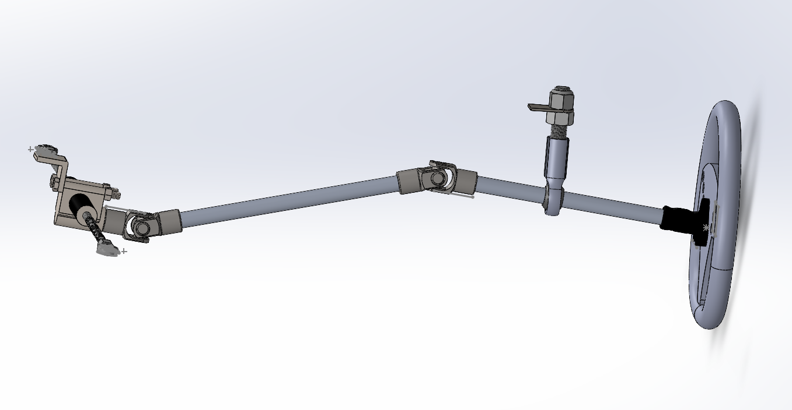

Steering System Design Validation
Designed and validated steering components for Sun Voyager, including the steering wheel assembly, hub kit, steering rods, U-joints, rack mount assembly, custom weld tabs, and supporting steel components. The work combined SolidWorks CAD iteration, assembly integration, FEA, and track-test support.
35
SolidWorks steering wheel iterations
204.8 MPa
Max von Mises stress in weld tab FEA
2.693
Factor of safety at exaggerated 150 N load
- Validated ASTM A656 Grade 80 HSLA weld tabs against a 551.581 MPa yield strength.
- Predicted FoS rose to 4.040 at 100 N and 8.079 at 50 N under proportional loading.
- Supported slalom, acceleration, and braking test sessions while processing bump-steer simulation data in MATLAB.
SolidWorks
FEA
MATLAB
Vehicle Dynamics
